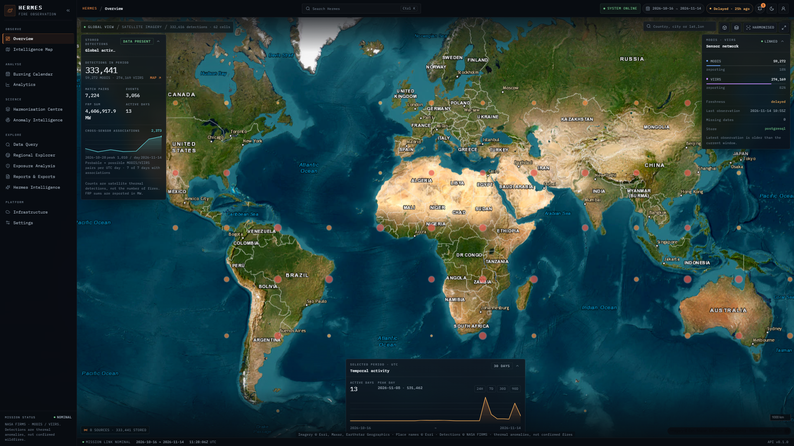
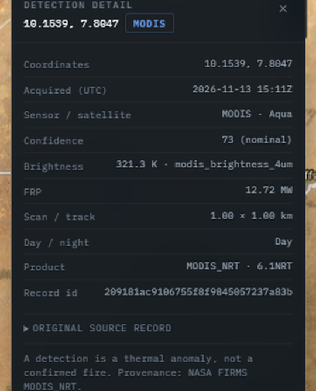
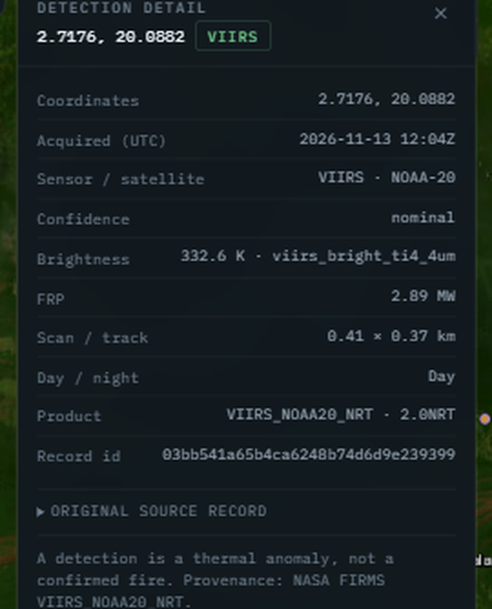
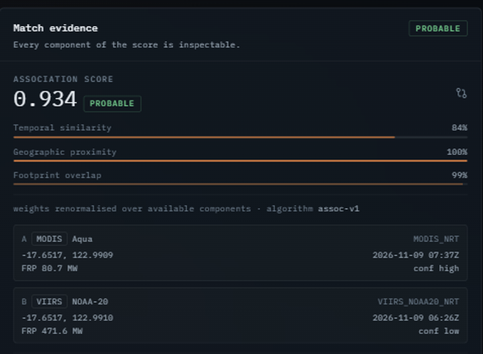
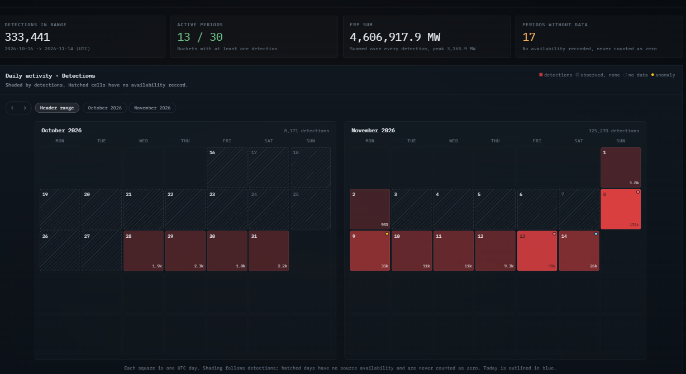
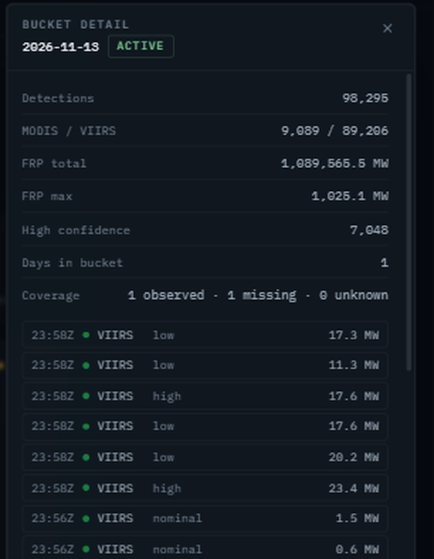
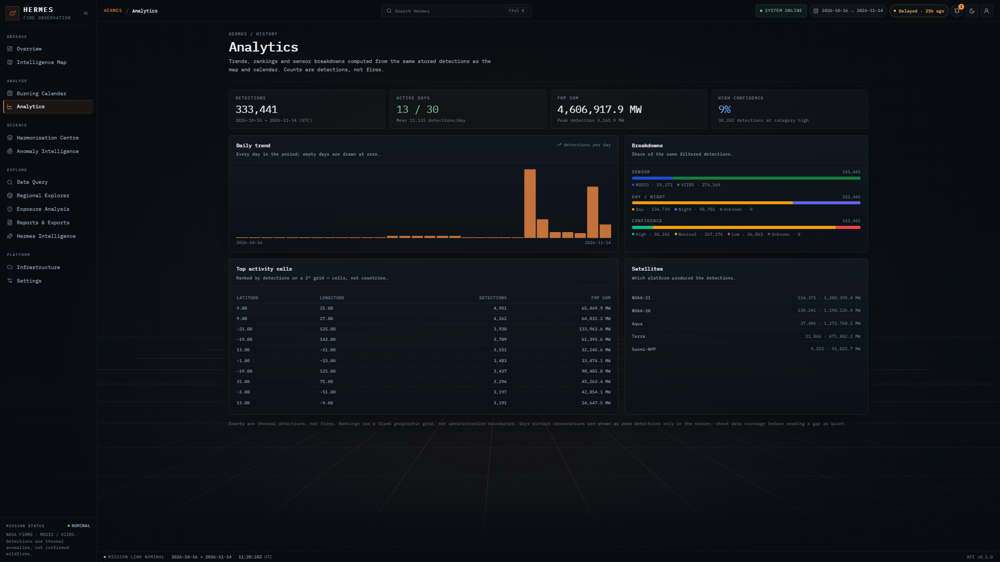
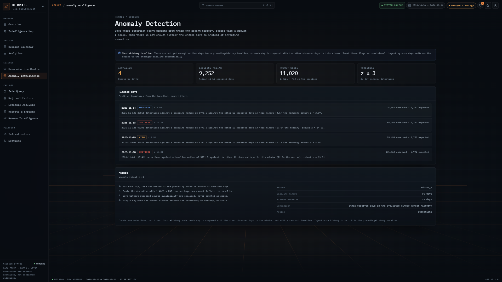
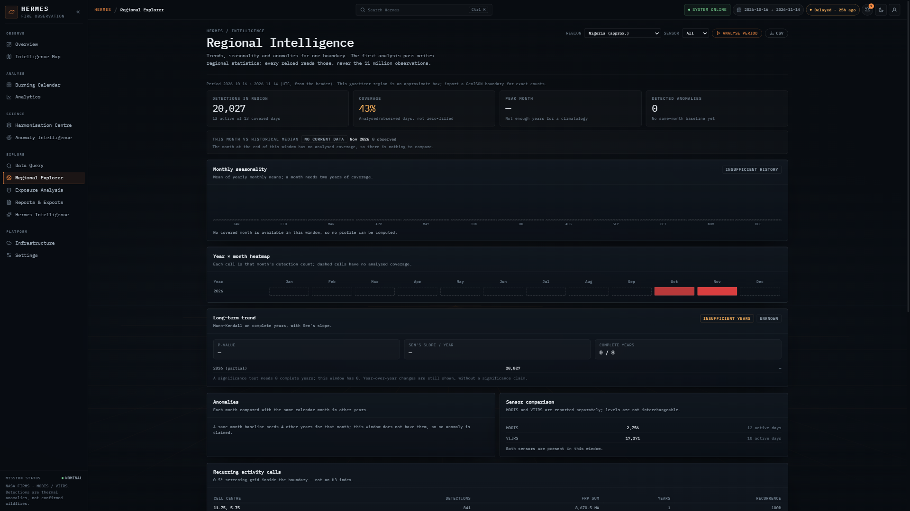
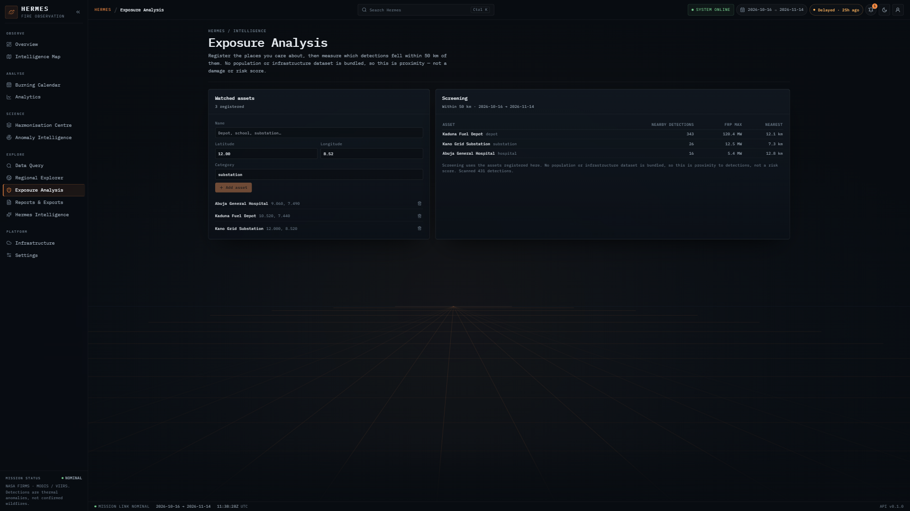

A consistent MODIS + VIIRS fire history for emergency managers.
Two sensors, two resolutions, two confidence languages. HERMES turns NASA FIRMS detections into one coverage-aware burning calendar — and keeps every raw observation behind every count.
MODIS is ageing out; VIIRS continues the record — at a different resolution, with different sensitivity and different overpass times. Add the two totals together and the result describes neither instrument.
Same period, same store, same query. Neither column is “more fire” — they are two different instruments answering the same question differently.


1 — 3 Confidence is not a probability. MODIS reports 73 (nominal); VIIRS reports the word nominal. 2 — 4 The footprint differs by an order of magnitude — 1.00 × 1.00 km against 0.41 × 0.37 km. Summing them mixes two sensitivity regimes into one unlabelled number.
Nothing is deleted and nothing is silently collapsed. Cross-sensor pairs are proposed, scored and labelled; the harmonised series is a documented de-duplication of VIIRS detections already seen by MODIS.
MODIS · SNPP · NOAA-20 · NOAA-21. Area CSV in ≤5-day windows, tiles and per-partition checkpoints.
Immutable source records, SHA-256 identity, 90-day retention. Never edited by analysis.
Raw confidence, brightness channel, footprint and processing version kept per family.
Different sensor families only: 180-minute window, 2 km screening, footprint overlap.
Thresholds are explicit and every component is stored with the pair for audit.
harmonised = MODIS + VIIRS − matched VIIRS. Raw series stay unchanged beside it.
The score is an association score, not the probability that two detections are the same physical fire. Rejected pairs are retained for audit — never subtracted from anything.

Full-bleed satellite imagery with place labels. Gridded density below zoom 6, individual detections past it — and every point opens its original NASA record.
Detections in period, MODIS/VIIRS split, match pairs and events. The period in the header drives every workspace.
Reporting share per family — 59,272 MODIS · 274,169 VIIRS — with freshness and last observation time.
One toggle removes VIIRS detections already associated with MODIS and outlines the duplicates. At world zoom: 250,157 of 333,441 remain.
Active days and peak day, 24h / 7d / 30d / 90d. The same range powers calendar, analytics and export.
Cell colour is detections per cell — one intense detection cannot recolour a region. Past zoom 6 the cells become points.
Coordinates, acquisition time, sensor, confidence, brightness channel, FRP, scan/track, product version and record id.
Day, week, month and year buckets over the stored record. A day inside coverage is observed, even at zero; a day outside it is unobserved — never zero.

13 of 30 days carry detections; the other 17 are not zeros — they have no source availability.
17 periods without data, stated in the headline tiles and again beneath the grid.
Observed / note / no data / anomaly. Empty and unobserved never share a colour.
Day · week · month · year, against detections, harmonised detections, FRP or high-confidence counts.
Any cell opens its buckets: MODIS/VIIRS split, FRP, coverage and the observations themselves.

98,295 detections · 9,089 MODIS / 89,206 VIIRS · coverage 1 observed · 1 missing.
Trend +42,500 detections / 30 days, first → last 2.26×, median level 9,252 — labelled low confidence at 43% coverage.
Analytics, anomaly screening, regional profiles, exposure and exports all read the same filtered detections — and every output carries its method, period and source identifiers.
Daily trend, sensor / day-night / confidence breakdowns, ranked 2° activity cells and per-platform totals.
Median absolute deviation against observed days; each flag carries its baseline, sample size and a written explanation.
Nigeria: 43% coverage, year × month heatmap, sensor comparison reported separately, climatology refused while history is short.
Watched assets screened within 50 km — proximity, not risk. Reports export with methodology, limitations and observation ids.




The value is not a prettier map. It is a fire record a duty officer, an analyst and a reviewer can all stand behind — with its uncertainty still visible.
Pilot HERMES with a national fire agency for a season, validate the harmonised series against burned-area products, and fund the archive backfill so the calendar spans the VIIRS record rather than 30 days. The console is live now — scan and query it yourself.